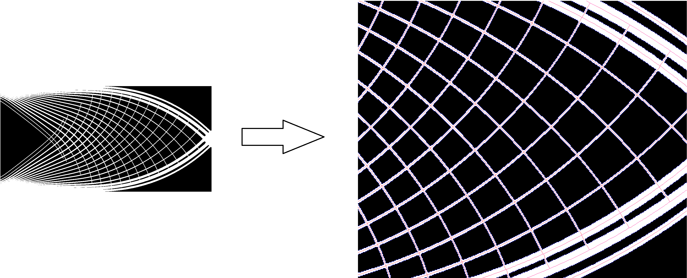

Finding the medial axis
Goal
We would like to find the medial axis of a given image. To do so, we use a couple techniques in order to clean up the image and find the medial axis.
Currently our approach uses the following techniques:
Image Preprocessing: We use a series of filters to clean up the image before running further algorithms.
Edge detection: We use opencv to detect edges in the image (findContours), we also apply canny edge detection to find the edges of the image
Voronoi Diagram: We calculate and use a voronoi diagram (as a graph).
Final filtering: We apply a series of algorithms to clean up the voronoi diagram and find the medial axis.
for example:

The medial axis of the image is in red/pink.